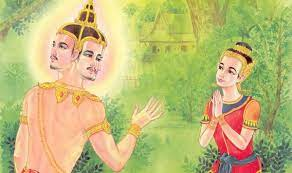

ตำนานเกี่ยวกับนางสงกรานต์นั้น ได้มีปรากฏในศิลาจารึกที่ วัดพระเชตุพนวิมลมังคลาราม หรือ วัดโพธิ์ ท่าเตียน โดยย่อว่า เมื่อวันสงกรานต์ตรงกับวันใดในแต่ละปี ก็จะมีนางสงกรานต์ประจำวันนั้นๆ
เมื่อวันสงกรานต์ตรงกับวันใดในแต่ละปี ก็จะมีนางสงกรานต์ประจำวันนั้นๆ ตรงกับวันอาทิตย์ จะชื่อ “ทุงษเทวี” ตรงกับจันทร์ ชื่อ “โคราดเทวี” ตรงกับวันอังคาร ชื่อ”รากษสเทวี” ” ตรงกับวันพุธ ชื่อ”มัณฑาเทวี” ตรงกับวันพฤหัสบดีชื่อ “กิริณีเทวี” ตรงกับวันศุกร์ ชื่อ “กิมิทาเทวี” ตรงกับวันเสาร์ ชื่อ”มโหทรเทวี”
ธรรมบาลกุมาร เป็นเทพบุตรที่พระอินทร์ประทานให้ลงไปเกิดในครรภ์ภรรยาเศรษฐี เมื่อโตขึ้นก็ได้เรียนรู้ภาษานก และเรียนไตรเภทจบเมื่ออายุได้เพียง 7 ขวบ จึงได้เป็นอาจารย์บอกมงคลต่างๆ แก่คนทั้งหลาย จนวันหนึ่ง ท้าวกบิลพรหม ได้ลงมาถามปัญหากับธรรมบาลกุมาร 3 ข้อ โดยถ้าธรรมบาลกุมารตอบได้ก็จะตัดเศียรบูชา แต่ถ้าตอบไม่ได้จะตัดศีรษะธรรมบาลกุมารเสียเอง โดยธรรมบาลกุมารได้ขอตอบคำถามใน 7 วัน
เมื่อถึงเวลา ท้าวกบิลพรหม ก็มาตามสัญญาที่ให้ไว้ ธรรมบาลกุมารจึงนำคำตอบที่ได้ยินจากนกไปตอบกับท้าวกบิลพรหม ทำให้ท้าวกบิลพรหมแพ้ในการตอบคำถามครั้งนี้ และก่อนจะตัดเศียร ท้าวกบิลพรหม ได้เรียก ธิดาทั้ง 7 องค์ ซึ่งเป็นนางฟ้า ให้เอาพานมารองรับ เนื่องจากเศียรของท้าวกบิลพรหมเป็นที่รวมแห่งความไม่ดีทั้งปวง ถ้าวางไว้บนแผ่นดินไฟจะไหม้โลก ถ้าโยนขึ้นไปบนอากาศฝนจะแล้ง ถ้าทิ้งลงในมหาสมุทรน้ำจะแห้ง
ธิดาทั้ง 7 จึงมีหน้าที่ผลัดเปลี่ยนกันดูแลเศียรของท้าวกบิลพรหม และในทุกๆ ปี ก็จะผลัดเปลี่ยนหมุนเวียนมาทำหน้าที่อัญเชิญพระเศียรท้าวกบิลพรหม แห่ไปรอบเขาพระสุเมรุ เป็นเวลา 60 นาที แล้วประดิษฐานไว้ในถ้ำคันธุลี ในเขาไกรลาศ จึงเป็นที่มาของ นางสงกรานต์ โดยแต่ละนางจะทำหน้าที่ผลัดเปลี่ยนกันตามวันมหาสงกรานต์นั่นเอง
คติความเชื่อของไทยถือว่าในวันสงกรานต์ถ้าหากได้มีการปล่อยนกปล่อยปลาแล้ว จะเป็นการล้างบาปที่ทำไว้ และเป็นการสะเดาะเคราะห์ร้าย ให้คงไว้แต่ความสุขความเจริญในวันขึ้นปีใหม่ การปล่อยนกปล่อยปลาที่ทำเป็นพิธีและติดต่อกันทุกๆปี จะเห็นได้ที่ปากลัดที่มีขบวนแห่ที่สวยงาม และเอกเกริกในตอนเย็น ตอนกลางคืนจะมีการละเล่นต่างๆ เช่น การเล่นสะบ้า คนหนุ่มสาวจะมีโอก่าสได้ใกล้ชิดกัน
วันที่เกี่ยวข้องกับวันสงกรานต์คือวันตรุษไทย ตรงกับวันขึ้น 15 ค่ำ เดือน 4 ซึ่งถือว่าเป็นวันสิ้นปีเก่าขึ้นปีใหม่ของไทยในสมัยโบราณคู่กับวันสงกรานต์ ที่เรียกว่า “ตรุษสงกรานต์” ตรุษ แปลว่า ยินดี หมายถึงยินดีที่มีชีวิตยั่งยืนจนถึงวันนี้ จึงจัดพิธีแสดงความยินดี โดยการทำบุญ ไม่ให้ประมาทในชีวิต ปกติจะจัด 3 วัน วันแรก คือแรม 14 ค่ำ เป็นวันจ่าย วันกลาง คือแรม 15 ค่ำ เป็นวันทำบุญ มีการละเล่นจนถึงวันที่ 3 คือขึ่น 1 ค่ำ เดือน 5 ปัจจุบันนิยมรวบยอดมาทำบุญและเล่นสนุกสนานในวันสงกรานต์ช่วงเดียว
แหล่งที่มา